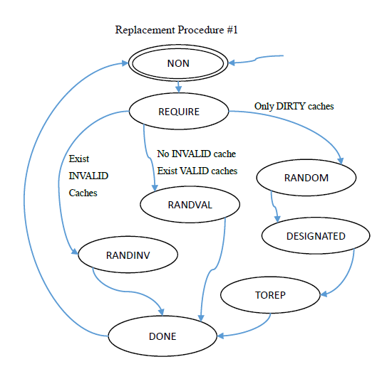
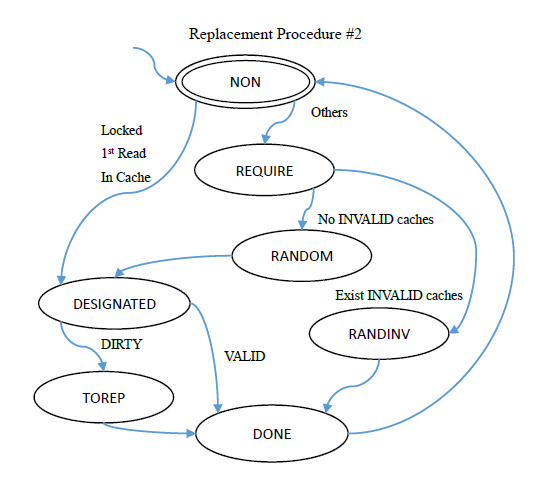
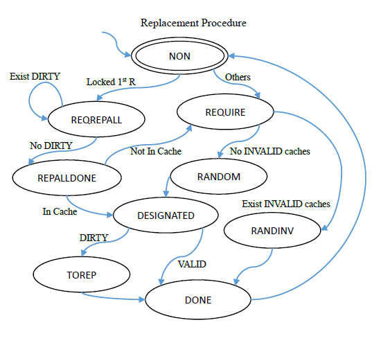

Godson-T is a many-core architecture designed and implemented by Institite of Computing Technology, Chinese Academy of Sciences. And Godson-T cache coherence protocol (Godson-T protocol for short) is the cache coherence protocol used in Godson-T system.
Modeling replacement procedure itself is not a hard work, but for further use in our research tools and experiments, indexes or ranks or parameters of arrays are better to be integer constants or simple integer variables rather than members of complex data structures. And this task is not that easy.
So what is the replacement procedure? It is the situation that we need designate a cache in the node. If there exist some INVALID caches, we randomly choose one (in practise, we should obey some principles such as LRU); else if there does not exist any INVALID chache, we still randomly choose one, but if it is DIRTY, then we Replace it into the associated memory address and then mark it as INVALID. We implement this procedure with a series of rules, and before these rules, we need store the current state and after these rules, we need return to the stored state. Thus, a rule that needs replacement will be seperated into 2 rules.
I designed two different methods for replacement procedure in modeling Godson-T.
Replacement Procedure #1

The problem in this procedure is that, in LRU, the nodes will choose proper caches without concerning about if its state is VALID or DIRTY, but this procedure concerns.
Replacement Procedure #2

This procedure is better because it’s nearer to the protocol and it has fewer states. The states in it are described following in detail. They are stages of that caches take initiative in replacement.
As we mentioned, all rules that need replace cached data to memory should be separated into two parts in our murphi model, which is inspired by interrupts in systems programming or function calls in programming languages. The two stages are listed as follows:
curNode, curCache, etc. Then REQUIRE the replacement.There are also some tips we should keep careful.
The last three tips can be ignored if we initialize all variables in the start state.
There are two properties that the cache coherence protocol must hold.
With those strong properties above, our model will generate a counterexample, which implies that two different process could cache the same location of memory in critical region protected by different locks, and once one of them modified the memory (with write through strategy), the other would cache wrong data.
There are two solutions to this problem.
There are still counter examples even if we use one lock:
A node i required a lock to enter its critical region, and before it left, another node j wrote the memory in i‘s critical region. Then caches in i were not coherent.
The reason of this incoherence is that in our model, the locks do not protect the critical regions in reality.
Since the pseudo-protection of locks lead to the incoherence, we must re-write our murphi code:
inProtection of boolean to each lock, so that we can record what actually the critical region protected by this lock is.inProtection.Even if we protect the critical regions in reality, there are still some errors. Suppose there is only one cache in each node (so that fasten the generation of corresponding counterexamples):
There existed some nodes such as j that hold a dirty copy of address a. Then a node i required a lock, and read a as a first read, then j wrote memory in another address, which forced the dirty cache of address a to be written back. Then, cache in i was inherent.
This error caused by the Confusing Replacement strategy we use in our model. In fact, there are two diffirent situation which caused a “replacement”.
In our current model, we confuse the former situation with the latter, which brings an error. Now we need modify our replacement procedure.

As the figure illustrated, we add two states in our replacement procedure: REQREPALL and REPALLDONE. Now the states or stages in replacement procedure means:
That is, if we meet a locked 1st read, we first replace all dirty caches in all nodes, then resume to original steps. In this approach, not only can we use nested locks in our model, but also the model can hold the strong Coherence Property without weakening it:
The cached data must be the same with data in their associated memories. In Godson-T, this means Read operation in critical region must cache correct data.
Now our modeling work has been done well!
Guard-Statement Normal Form (GSNF) is the principle that we use while modeling in murphi. It requires that
if clause in the assignment part of a rule.